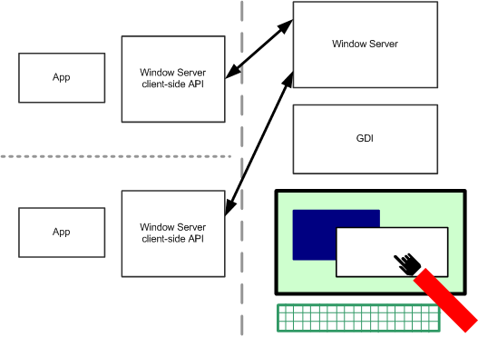

The Window Server keeps track of window sizes, positions, visibility and validity (keeping window content up to date). It also receives and distributes user input in the form of key presses and pointer events.
Note that much of the Window Server API is low-level and is encapsulated in the UI Control Framework API.
The following table shows the DLLs that provides the functionality and the library to which your code must link.
| DLL | LIB | Short description |
|---|---|---|
ws32_nga.dll |
ws32.lib |
The Window Server client-side library for the ScreenPlay variant. |
ws32_nonnga.dll |
ws32.lib |
The Window Server client-side library for the non-ScreenPlay variant. |
The details of the client-side API are very similar in the two variants. There are some additional features in the ScreenPlay variant for displaying surfaces.
The Window Server is used by all applications that have a user interface. The primary user input for these applications comes from the keyboard and pointer, and their primary user-visible output is to the screen. These input and output devices are shared between all applications on the system. Each client thread opens a session to the server, and issues requests for service.
The Window Server controls access by many client applications, to the machine’s screen, keyboard and pointer.
The Window Server thread runs at a higher priority than any application; only the kernel runs at a higher priority. Therefore, all applications' requests for screen updates, and all handling of machine events such as pointers and keys, are handled at higher priority than any individual application.
Each client application runs in its own thread. The Window Server presents an interface to client applications such that they can run without direct interaction with the other applications on the machine. Drawing is clipped to the visible area of the application’s windows. Pointer events are only received if they are related to the application’s windows. Similarly, keyboard events are only given to an application whose window group has focus or to one that has captured them. A client application may ignore the majority of events relating to other applications. It won't even be told about most of them.
Each client application communicates with the Window Server using a Window Server session, or other object created from the session. The application waits to receive events by setting up one or more active objects. Events include user input and requests that windows be redrawn. Applications may create systems of windows and draw to them.
The following diagram shows the key classes in the Window Server client-side library. Below the diagram we provide a summary of the key concepts.
| Concept | Description |
|---|---|
Session |
A Window Server session allows an application to control and interrogate its windows, the events it wishes to receive, and all other window groups connected to the Window Server. A session is encapsulated by RWsSession. |
Events |
Applications function by waiting for events and handling them. Common events are user input, and requests that windows be redrawn. The Window Server session is used to request and obtain events. Most events (such as key and point events) are encapsulated in TWsEvent. A redraw event tells the application what screen area needs redrawing. It is encapsulated in TWsRedrawEvent. |
Window group |
A window group is special non-displayable type of window, which can be considered as the root window of an application. Keyboard events and focus are associated with it, and it can have a name, used for such things as lists of running applications. A window group is provided by RWindowGroup. |
Drawable windows |
Drawable windows allow applications to draw to the screen. They have operations to control size, position, visibility, scrolling, z-order, and parent/child relationships. In a standard drawable window, areas that become invalid (e.g. when an overlaying window is removed) must be redrawn by the client application. It is provided by RWindow. A backed-up drawable window's content is stored by the Window Server, and redrawn by the server when it becomes invalid. It is provided by RBackedUpWindow. These window types are derived from a sequence of base classes, RWindowTreeNode, RWindowBase, and RDrawableWindow. |
Graphics |
Applications draw to drawable windows through a windows graphics context provided by a windows graphics device. These implement the abstract graphics context and graphics device interfaces respectively, as defined in the Graphics API. The windows graphics context is provided by CWindowGc; the windows graphics device by CWsScreenDevice. The bitmap class, CFbsBitmap, is extended for most efficient use with the Window Server by CWsBitmap. |
Sprites and cursors |
A sprite is an arbitrary-shaped bitmap that can be moved without applications having to redraw the underlying screen. It has one or more sprite members, each containing a bitmap image and a time interval for that bitmap to be displayed. The sprite class is RWsSprite; the sprite member class is TSpriteMember. A specialized sprite type is provided for pointer cursors, which automatically track the position of a pointer. It is provided by RWsPointerCursor. Text cursors are handled by the class CTextView. They can take the form of a text or a line cursor. |
Animation client |
Third-parties can write Window Server plug-in DLLs, as defined in the Animation API, that perform animations. Providers of such animation DLLs must also provide a client-side interface to allow applications to control the animation. The base class for an animation client-side interface is RAnim. Clients must request an animation DLL to be loaded before the animations provided by it can be used. This is done through RAnimDll. |
Transparent windows |
Transparent windows enable you to display semi-transparent bitmaps on a window. The window must be an RWindow. Methods to create transparent windows can be found in the RWindow class. |
Surfaces |
In ScreenPlay, applications (such as games and video) that use a rendering API that can potentially benefit from hardware acceleration (depending on hardware) can render directly to graphics surfaces. A surface is a hardware independent buffer for holding an image or part of a scene. Surfaces are identified using a 128 bit surface ID in a TSurfaceId class. The Window Server delegates the composition of surfaces to a composition engine which has an adaptation part that enables device creators to take advantage of graphics processing hardware if it is available. However, this is largely transparent to application developers. See External Surfaces for more information. |
Direct Screen Access (DSA) |
Mainly used in the non-ScreenPlay variant, DSA enables applications that require high frame rates (such as video and games) to bypass the Window Server and write to the screen directly. This avoids client-server communication and as a result is faster. However, some interaction with the Window Server is needed to prevent the application from drawing over other application's data. On ScreenPlay, support for direct screen access (DSA) is maintained for backward compatibility reasons, although Symbian recommends the use of external surfaces in preference to DSA. However, whereas on some earlier devices, applications might work without fully conforming to the rules of DSA, these rules are now necessarily enforced. See DSA Migration Guide for information about the guidelines applications must follow in order to be able to run correctly on a ScreenPlay device. |
Copyright ©2010 Nokia Corporation and/or its subsidiary(-ies).
All rights
reserved. Unless otherwise stated, these materials are provided under the terms of the Eclipse Public License
v1.0.